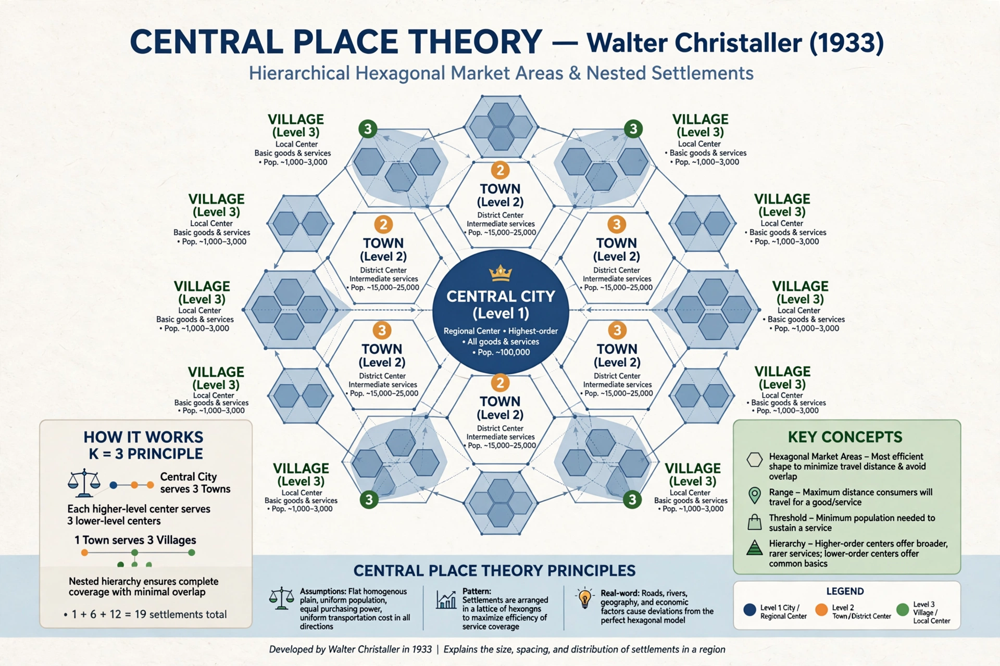

Central place theory is a geographical theory that seeks to explain the number, size and range of market services in a commercial system or human settlements in a residential system. It was introduced in 1933 by German geographer Walter Christaller in his book Central Places in Southern Germany.

Christaller assumed an isotropic plain with evenly distributed population and resources, rational consumers who minimise travel distance, and suppliers who maximise market area. Settlements serving as centres provide goods and services to surrounding hinterlands. Because market areas pack most efficiently as hexagons, a nested hierarchy emerges: small hamlets offer low-order goods frequently needed, while larger cities offer high-order, specialised goods over wider ranges.
Christaller organised the hierarchy by K-values: the marketing principle (K=3), the transport principle (K=4) and the administrative principle (K=7). August Lösch later generalised the model. The theory influenced urban geography and regional planning, though critics note real landscapes are not uniform and historical, political and physical factors distort the pattern.